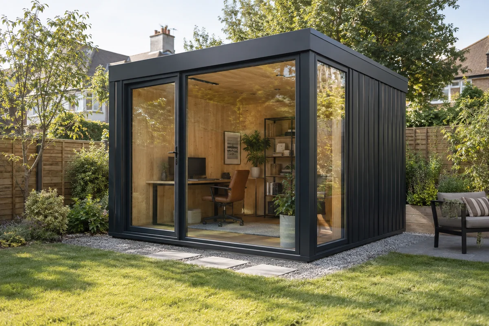
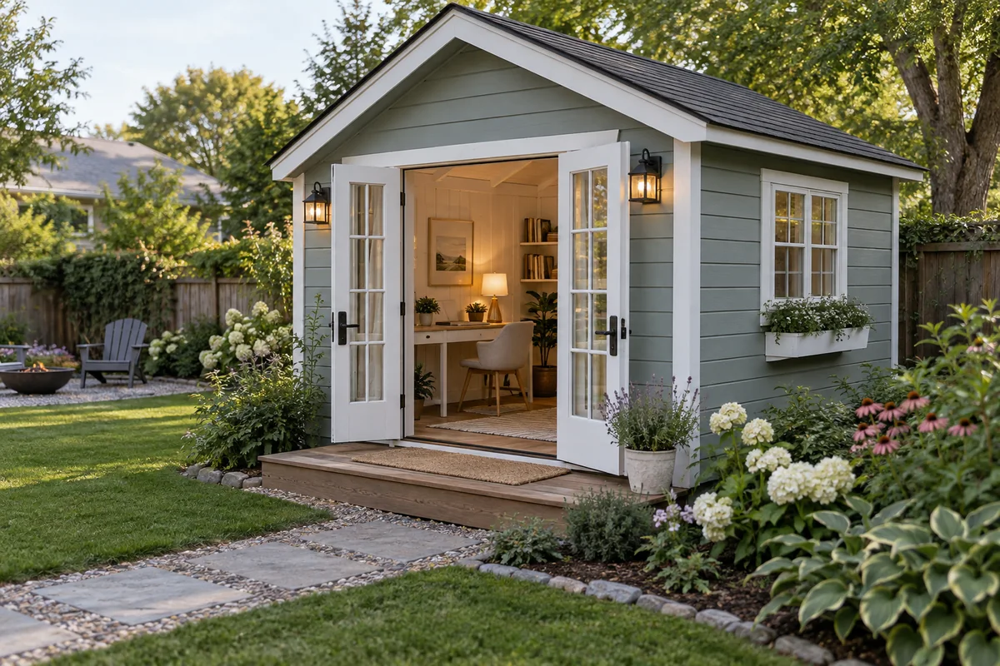
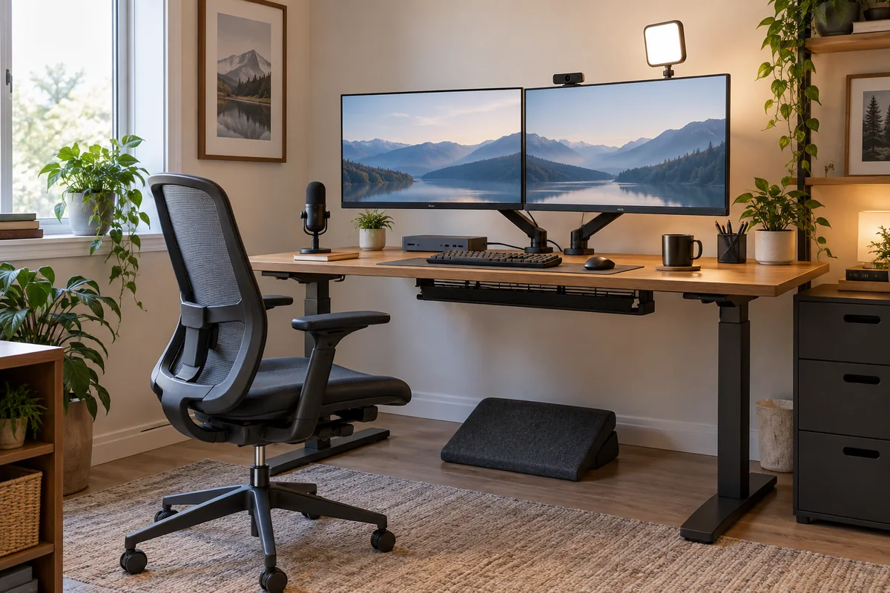
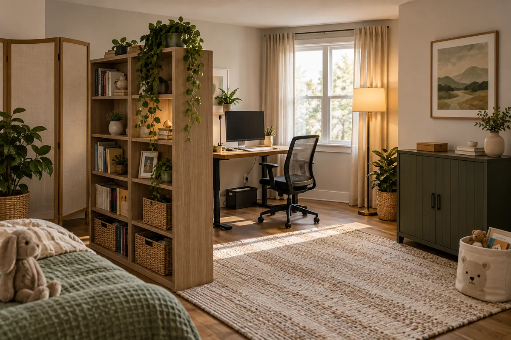

Backyard office pod vs. she shed: the honest way to buy back quiet when you work from home
Working from home with small children creates a problem that another pair of headphones cannot fully solve: your office is inside the same sound, traffic and family routines you are trying to work around.
A backyard office changes the problem. Instead of asking software to erase a cartoon, a door slam or a toddler calling your name, it adds physical distance and another building envelope between the call and the house. That can be more valuable than adding more technology to a bad room.
The expensive prefab pod that prompted this guide is one version of that idea. It is not the only version, and it is not automatically the best one.
Affiliate disclosure: As an Amazon Associate I earn from qualifying purchases. The shopping links below are affiliate links. Prices, sellers, availability and specifications can change. Verify every exact listing and local requirement before buying.




These are original HomeForge editorial illustrations, not manufacturer or Amazon listing photos. Select a card to review the exact linked product or current category results.
The product that started the question
The prefab backyard office pod on Amazon is listed as a metal outdoor accessory structure with a galvanized-steel frame, double tempered glass, acoustic insulation, electrical outlets and LED lighting. The listing gives exterior dimensions of roughly 236 by 90 by 99 inches and an item weight of 12,110 pounds. It also says the structure is not intended as a permanent dwelling.
That is closer to buying a small building than buying a shed kit.
The listing calls the pod soundproof, but it does not provide an independently verified Sound Transmission Class rating, a door rating, a ventilation-noise measurement or an installed test result. It also had no customer reviews when this guide was checked on September 28, 2026. Treat the acoustic language as a seller claim until a supplier provides a test report for the exact configuration.
Before considering it, ask for:
- A complete drawing with interior and exterior dimensions.
- Foundation, anchoring and delivery requirements.
- Electrical-panel, circuit, plug and inspection details for your location.
- Heating, cooling and fresh-air ventilation requirements.
- Door, wall, roof and glass acoustic test data for the assembled structure.
- Wind, snow and water-management specifications for your site.
- Warranty, replacement-glass and local service terms.
- The complete installed cost, including crane or forklift access if required.
Pod, she shed or spare room?
| Option | What it solves well | What people underestimate | Best fit |
|---|---|---|---|
| Prefab office pod | Fast path to a purpose-built detached room; strong visual separation from home life | Site access, foundation, permits, utility connections, HVAC, drainage and uncertain acoustic performance | Homeowners who expect years of remote work and can verify the complete installation |
| Finished shed or “she shed” office | Flexible size and style; easier to customize and often easier to source locally | A storage shed is not automatically a comfortable office; insulation, air sealing, windows, electrical work and ventilation can become most of the project | A measured DIY or local-contractor build with room for inspections and upgrades |
| Garage conversion or partition | Uses an existing shell and may simplify power and network access | Heat, cold, vehicle fumes, door leakage and loss of storage or parking | Homes with an underused garage and a safe plan for ventilation and separation |
| Indoor office with a real door | Lowest disruption and easiest access to the home | Soft décor reduces echo but does little to stop sound through a hollow door, gaps and shared walls | Renters, smaller budgets and anyone who needs a reversible first step |
| Interior call booth or micro office | Gives calls a small, controlled zone without building outside | Small spaces need deliberate ventilation and comfortable lighting | Short meetings, shared homes and rooms that cannot become a full office |
| Coworking or rented room | Immediate professional separation with no construction | Travel, recurring fees and less control over availability | A bridge while testing whether a detached office is worth building |
The parent test: solve the call, not the Instagram photo
For a parent, a useful office has to pass four ordinary moments:
- A child is playing in the nearest room while you speak at a normal call volume.
- Someone walks through the house and closes a door.
- You are silent while another person on the call speaks.
- The call lasts an hour with the door shut and the room still feels comfortable.
Record those tests with the same microphone, meeting app and background-noise settings you actually use. A beautiful shed can still fail if its door leaks, the HVAC fan is loud, Wi-Fi is unstable or the room overheats by noon.
Physical separation helps, but no office should be described as childproof or supervision-free. A detached workspace needs a family plan for supervision, emergencies and how children can reach you when necessary.
What actually reduces call noise
Start with the path the sound takes.
- Distance and a closed boundary: moving the microphone away from the noise and closing a well-fitted door often matters more than decorative foam.
- Seal the obvious gaps: perimeter weatherstripping and a door sweep can reduce direct air paths. They do not turn an ordinary room into a certified sound-isolation booth.
- Control the microphone: a close-positioned dynamic USB microphone or a call headset can capture more voice relative to room noise.
- Reduce echo inside: a rug, curtains, upholstered furniture and correctly installed acoustic panels can reduce reflections. They do not replace mass, airtight construction and isolated assemblies when the goal is stopping sound between rooms.
- Keep ventilation quiet: a sealed office that is uncomfortable or stuffy is not a successful office. The U.S. EPA emphasizes source control, ventilation and filtration as the core indoor-air strategies.
Useful starting points:
- USB dynamic microphones
- Work-from-home call headsets
- Solid-core interior doors
- Door weatherstripping and sweeps
- Acoustic panels for reducing room reflections
- Heavy office curtains
- Low-pile office rugs
The complete outdoor-office cost sheet
Do not compare the price of a finished pod with the sticker price of an empty shed. Compare complete, usable rooms.
| Cost block | Questions to answer |
|---|---|
| Structure | What exact walls, roof, glazing, door, insulation and finish are included? |
| Site | Does the location need grading, drainage, a slab, piers or anchors? |
| Delivery | Can a truck, forklift or crane reach the installation point? |
| Approval | What do zoning, setback, HOA, building and electrical rules require locally? |
| Power | Who connects the structure, and what circuit and inspection are required? |
| Comfort | How will it heat, cool, ventilate and control humidity in every season? |
| Connectivity | Will it use buried Ethernet, fiber, point-to-point wireless or tested Wi-Fi? |
| Safety | Are smoke/CO detection, egress, locks, exterior lighting and surge protection appropriate? |
| Work setup | Are the desk, chair, monitor, camera, microphone and storage included? |
| Recovery | Who services broken glass, water entry, electrical faults or HVAC failure? |
A small accessory structure may be treated differently from an occupied office, and electrical work can create its own permit requirement. Check the authority having jurisdiction before paying a deposit. A listing's “pre-wired” language does not prove that the final connection is legal or complete where you live.
A desk setup that works in either room
The same desk kit can move from a spare bedroom to a finished backyard office, which makes it a sensible first investment while you decide whether to build.
The foundation
- Electric standing desks — compare desktop size, stability, height range and warranty.
- Adjustable ergonomic office chairs — prioritize fit and return terms over a long feature list.
- Single and dual monitor arms — verify monitor weight, VESA pattern and desk-clamp clearance.
- Large desk mats — an inexpensive way to define the work zone and protect the surface.
Calls and connectivity
- USB-C docks with Ethernet — match laptop ports and display requirements.
- Webcams for work calls — good lighting often improves the image more than resolution alone.
- Key lights and monitor lights — place light in front of the face rather than relying on a bright window behind it.
- Cat6 outdoor-rated Ethernet cable — have the route and grounding requirements reviewed for the actual installation.
- Small UPS battery backups — size it from the equipment load and required runtime.
Cable and daily-use details
Redecorating the office you already have
If an outdoor room is not practical, redesign the existing room around calls before buying another desk.
- Move the desk off the noisiest shared wall. Put storage or a filled bookcase on that wall when the layout allows it.
- Face the light. Use a window or adjustable lamp in front of you and keep the background calmer than the face.
- Create a visual work boundary. A room divider, curtain or bookcase can tell the household when you are on a call even when it is not soundproof.
- Use soft surfaces deliberately. A rug and curtains can calm harsh echo; select them for the room rather than covering every wall with foam.
- Store work out of reach. Closed cabinets can keep cables, batteries, tools and confidential papers away from small children.
Affiliate-ready refresh list:
- Freestanding bookcase room dividers
- Folding office room dividers
- Closed office storage cabinets
- Warm adjustable floor lamps
- Dimmable desk lamps
- Cable boxes and cord covers
- Low-VOC removable wallpaper
- Simple office wall art
The decision I would make
Start by fixing the existing call setup: microphone position, door gaps, desk placement, lighting and a repeatable noise test. Those purchases remain useful in any future office.
If the room still fails, price three complete paths: an interior door-and-room upgrade, a locally finished shed office and a purpose-built prefab pod. Include every site and utility cost. A detached office earns its space when it reliably protects focused work for years, not when it merely looks good in a product photo.
The prefab pod is compelling as an idea: work leaves the house without leaving the property. The current listing is still a high-consequence purchase with unverified acoustic performance. Get drawings, test data, approvals and an installed quote before treating the Buy Now button as a building plan.
Sources and claim boundaries
- Amazon product listing for the referenced prefab office pod, reviewed September 28, 2026. Product construction, dimensions and acoustic language are seller-provided claims; HomeForge has not tested this structure.
- U.S. EPA: Improving Indoor Air Quality, for source control, ventilation and filtration guidance.
- U.S. EPA: How much ventilation do I need?, for the importance of outdoor-air exchange.
- ICC example of permit exemptions, showing why a size-based shed exemption does not authorize work that violates other laws and why local rules must be checked.
This is a planning guide, not structural, electrical, acoustic, legal or zoning advice. It does not claim hands-on testing of the pod or measured performance of the linked products.
Get the free Starter Kit →